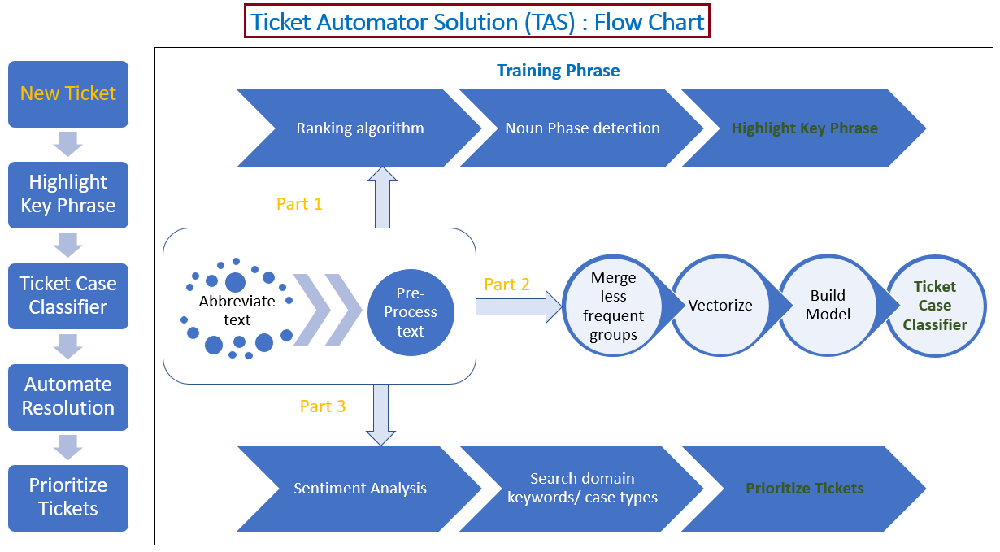
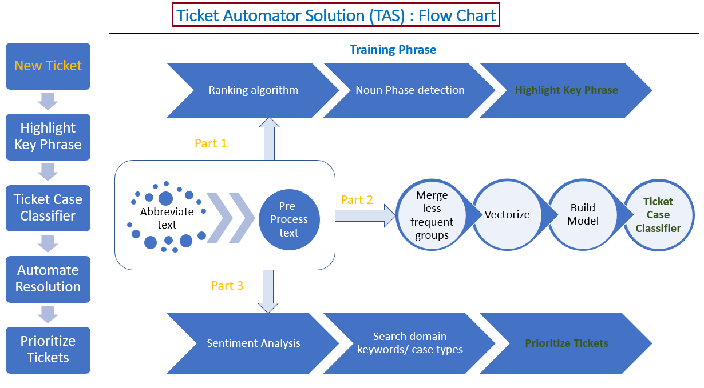

Ticket Automator Solution (TAS)
Main Idea
ML based solution to bring meaningful insights on the Customer Service tickets (CRM) thereby reducing the time and effort spent by the customer service agents, increasing the customer digital experience.
Benefits
For Customers : ▪ Faster response and fixes for their issues. For Banks : ▪ Integrate Tickets from various sources ( eg: e-mails, chatbots, phone calls etc) ▪ Satisfied Customers ▪ Human effort reduction for analysis of CRM tickets.
High-level and Flow chart
High-level visualization of the project.
 TAS Flow chart.

TAS Flow chart.

Components
The project was run on i5 CPU with 16 GB RAM, with no GPU. There are four main components for the TAS solution. Highlight Key Phrase ▪ Model extracts essence of the ticket ▪ Salient features are highlighted ▪ Provides a gist of tickets to higher level management Ticket case classifier ▪ Aggregate tickets from various sources (e-mail, chatbots, calls etc) ▪ Route Tickets to concerned groups (Auto send e-mails wherever applicable) ▪ Minimize manual intervention ▪ Faster response time Resolution predictor ▪ Reduce time spend for debugging the issue ▪ A weightage of ticket score is provided for each resolution which increases the confidence to apply the resolution Prioritize Tickets ▪ Focus on high priority issues ▪ Enable workforce allocation on tickets by customer service managers